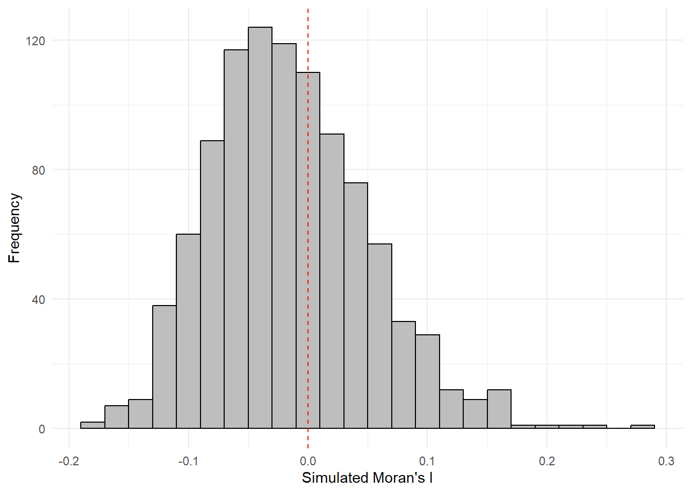
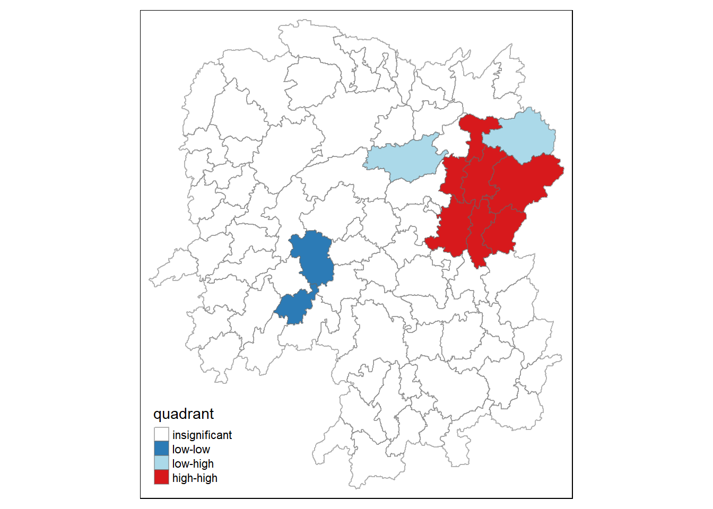
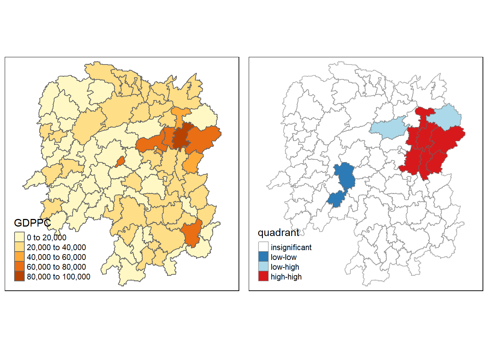

pacman::p_load(sf, spdep, tmap, tidyverse)2C: Local Measures of Spatial Autocorrelation
1. Overview
In this hands-on exercise, I learn how to compute Global and Local Measure of Spatial Autocorrelation (GLSA) by using spdep package.
2. Getting Started
2.1. The analytical question
In the context of spatial policy, one of the primary objectives pursued by local governments and planners is to ensure an equitable distribution of development across a region or province. Our primary goal is to employ appropriate spatial statistical methods to assess whether development is evenly distributed across Hunan Province in the People’s Republic of China. If the answer to this question is negative, subsequent inquiry will focus on identifying potential spatial clustering patterns. If there is evidence of spatial clustering, the final question will revolve around pinpointing the specific locations or areas where these clusters occur.
This case study is centered on the analysis of the spatial distribution of a particular development indicator, namely GDP per capita, within Hunan Province, China, as described in further detail here.
The following code chunk installs and loads sf, readr, tmap and tidyverse packages into R environment.
The data sets used are:
Hunan province administrative boundary layer at county level. This is a geospatial data set in ESRI shapefile format.
Hunan_2012.csv: This csv file contains selected Hunan’s local development indicators in 2012.
3. Getting the Data Into R Environment
3.1. Importing Shapefile into R Environment
The following code chunk uses st_read() function from the sf package to import Hunan shapefile into R as simple features object.
hunan <- st_read(dsn = "data/geospatial",
layer = "Hunan")Reading layer `Hunan' from data source
`D:\scwsu\ISSS624\Hands-on_Ex2\data\geospatial' using driver `ESRI Shapefile'
Simple feature collection with 88 features and 7 fields
Geometry type: POLYGON
Dimension: XY
Bounding box: xmin: 108.7831 ymin: 24.6342 xmax: 114.2544 ymax: 30.12812
Geodetic CRS: WGS 843.2. Importing CSV File into R Environment
The following code chunk utilizes read_csv() function of readr package to import Hunan_2012.csv into R as R data frame class.
hunan2012 <- read_csv("data/aspatial/Hunan_2012.csv")Use spec() function to obtain the complete column specifications for this dataset. If the preference is not to see the column types, the column types can be specified or show_col_types = FALSE can be set to suppress this message.
3.3. Performing relational join
The following code chunk utilizes left_join() function of dplyr package to update the attribute table of hunan’s SpatialPolygonsDataFrame with the attribute fields of hunan2012 dataframe.
hunan <- left_join(hunan,hunan2012) %>%
select(1:4, 7, 15)3.4. Visualising Regional Development Indicator
Next, I create a foundational map and a thematic map to visualize the distribution of GDPPC 2012. We’ll achieve this using the qtm() function from the tmap package.
equal <- tm_shape(hunan) +
tm_fill("GDPPC",
n = 5,
style = "equal") +
tm_borders(alpha = 0.5) +
tm_layout(main.title = "Equal interval classification")
quantile <- tm_shape(hunan) +
tm_fill("GDPPC",
n = 5,
style = "quantile") +
tm_borders(alpha = 0.5) +
tm_layout(main.title = "Equal quantile classification")
tmap_arrange(equal,
quantile,
asp=1,
ncol=2)
4. Global Spatial Autocorrelation
In this section, I compute global spatial autocorrelation statistics and to perform spatial complete randomness test for global spatial autocorrelation.
4.1. Computing Contiguity Spatial Weights
It is essential to create a spatial weights matrix for the study area to calculate the global spatial autocorrelation statistics. This matrix defines the neighborhood relationships between the geographic units (counties) in the study area.
The following code chunk utilizes the poly2nb() function form the spdep package to create contiguity weight matrices for the study area. This function constructs a list of neighbors where the regions share contiguous boundaries and also allows for a queen argument, which can be set to TRUE (default setting) or FALSE. If the argument is not explicitly set to “queen = FALSE”, the function will generate a list of first-order neighbors based on the Queen’s contiguity criterion.
wm_q <- poly2nb(hunan,
queen=TRUE)
summary(wm_q)Neighbour list object:
Number of regions: 88
Number of nonzero links: 448
Percentage nonzero weights: 5.785124
Average number of links: 5.090909
Link number distribution:
1 2 3 4 5 6 7 8 9 11
2 2 12 16 24 14 11 4 2 1
2 least connected regions:
30 65 with 1 link
1 most connected region:
85 with 11 linksThe summary report indicates that in Hunan, there are 88 area units. Among these, the most connected area unit is surrounded by 11 neighbors. On the other hand, there are two area units that have only one neighbor each.
4.2. Row-standardised weights matrix
Next, I assign equal weights (style=“W”) to neighboring polygons by dividing 1 by the number of neighbors each polygon has and then summing their weighted income values. While this is a straightforward way to summarize neighbor values, it has a drawback when polygons near the study area’s edges rely on fewer neighbors, potentially causing over- or underestimation of spatial autocorrelation. For simplicity, I use the style=“W” option, but there are more robust alternatives like style=“B” exist.
rswm_q <- nb2listw(wm_q,
style="W",
zero.policy = TRUE)
rswm_qCharacteristics of weights list object:
Neighbour list object:
Number of regions: 88
Number of nonzero links: 448
Percentage nonzero weights: 5.785124
Average number of links: 5.090909
Weights style: W
Weights constants summary:
n nn S0 S1 S2
W 88 7744 88 37.86334 365.9147The nb2listw() function requires an object of class nb as input. It has two main arguments: style and zero.policy.
The style argument can take values such as “W,” “B,” “C,” “U,” “minmax,” and “S.” “B” represents basic binary coding, “W” stands for row-standardized (sums over all links to n), “C” denotes globally standardized (sums over all links to n), “U” is equal to “C” divided by the number of neighbors (sums over all links to unity), and “S” corresponds to the variance-stabilizing coding scheme proposed by Tiefelsdorf et al. 1999, p. 167-168 (sums over all links to n).
If the zero.policy is set to TRUE, weights vectors of zero length are added for regions without neighbors in the neighbors list. This results in lag values of zero for these regions, equivalent to the sum of products of the zero row t(rep(0, length = length(neighbors))) %*% x, where x is an arbitrary numerical vector of length length(neighbors). The spatially lagged value of x for the zero-neighbor region will be zero, which may or may not be a meaningful choice.
4.3. Global Spatial Autocorrelation: Moran’s I
The following code chunk performs Moran’s I statistical test using moran.test() function of spdep package.
moran.test(hunan$GDPPC,
listw=rswm_q,
zero.policy = TRUE,
na.action=na.omit)
Moran I test under randomisation
data: hunan$GDPPC
weights: rswm_q
Moran I statistic standard deviate = 4.7351, p-value = 1.095e-06
alternative hypothesis: greater
sample estimates:
Moran I statistic Expectation Variance
0.300749970 -0.011494253 0.004348351 Statistical Conclusion: The Moran’s I statistic standard deviate of 4.7351 is significantly greater than expected under the null hypothesis of spatial randomness. The p-value (1.095e-06) suggests strong evidence to reject the null hypothesis. Therefore, we can conclude that there is a statistically significant positive spatial autocorrelation in the distribution of GDPPC values in the study area. In other words, neighboring regions tend to have similar GDPPC values, indicating the presence of spatial clustering or spatial dependence in economic development.
4.3.1. Computing Monte Carlo Moran’s I
The following code chunk utilizes moran.test() function of spdep package to perform permutation test for Moran’s I statistic. A total of 1000 simulations will be performed.
set.seed(1234)
bperm= moran.mc(hunan$GDPPC,
listw=rswm_q,
nsim=999,
zero.policy = TRUE,
na.action=na.omit)
bperm
Monte-Carlo simulation of Moran I
data: hunan$GDPPC
weights: rswm_q
number of simulations + 1: 1000
statistic = 0.30075, observed rank = 1000, p-value = 0.001
alternative hypothesis: greaterStatistical Conclusion: In the Monte-Carlo simulation, the observed Moran’s I statistic of 0.30075 falls within the distribution of Moran’s I statistics generated through 1000 simulations. The p-value of 0.001 indicates that the observed Moran’s I statistic is statistically significant at a significance level of 0.05 (assuming a typical significance level). Therefore, we can conclude that there is a statistically significant positive spatial autocorrelation in the distribution of GDPPC values in the study area, consistent with the earlier conclusion. In other words, neighboring regions tend to have similar GDPPC values, indicating the presence of spatial clustering or spatial dependence in economic development.
4.3.2. Visualising Monte Carlo Moran’s I
The following code chunk utilizes hist() and abline() functions.
mean(bperm$res[1:999])[1] -0.01504572var(bperm$res[1:999])[1] 0.004371574summary(bperm$res[1:999]) Min. 1st Qu. Median Mean 3rd Qu. Max.
-0.18339 -0.06168 -0.02125 -0.01505 0.02611 0.27593 hist(bperm$res,
freq=TRUE,
breaks=20,
xlab="Simulated Moran's I")
abline(v=0,
col="red") 
Statistical Conclusion: The observed Moran’s I statistic (0.30075) is significantly higher than the mean of the simulated Moran’s I statistics (-0.01505), indicating a statistically significant positive spatial autocorrelation. The histogram and summary statistics provide a visual and numerical representation of the distribution of simulated Moran’s I values, with the observed value clearly standing out as an outlier on the right tail of the distribution.
The following code chunk plot the values by using ggplot2 package.
simulated_data <- data.frame(Moran_I = bperm$res[1:999])ggplot(simulated_data, aes(x = Moran_I)) +
geom_histogram(binwidth = 0.02, fill = "grey", color = "black") +
labs(x = "Simulated Moran's I", y = "Frequency") +
geom_vline(xintercept = 0, color = "red", linetype = "dashed") +
theme_minimal()
4.4. Global Spatial Autocorrelation: Geary’s
4.4.1. Geary’s C test
The following code chunk performs Geary’s C test for spatial autocorrelation by using geary.test() of spdep package.
geary.test(hunan$GDPPC, listw=rswm_q)
Geary C test under randomisation
data: hunan$GDPPC
weights: rswm_q
Geary C statistic standard deviate = 3.6108, p-value = 0.0001526
alternative hypothesis: Expectation greater than statistic
sample estimates:
Geary C statistic Expectation Variance
0.6907223 1.0000000 0.0073364 Statistical Conclusion: The observed Geary C statistic of 0.6907223 is significantly lower than the expectation of 1.0000000 under the null hypothesis of spatial randomness. Additionally, the p-value of 0.0001526 is highly significant, indicating that there is strong evidence to reject the null hypothesis. This suggests that there is a spatial clustering pattern in the distribution of GDPPC values in the study area, and the observed values are not consistent with spatial randomness.
4.4.2. Computing Monte Carlo Geary’s C
The following code chunk performs permutation test for Geary’s C statistic by using geary.mc() of spdep package.
set.seed(1234)
bperm=geary.mc(hunan$GDPPC,
listw=rswm_q,
nsim=999)
bperm
Monte-Carlo simulation of Geary C
data: hunan$GDPPC
weights: rswm_q
number of simulations + 1: 1000
statistic = 0.69072, observed rank = 1, p-value = 0.001
alternative hypothesis: greaterStatistical Conclusion: The observed Geary C statistic of 0.69072 is significantly lower than the values obtained from the Monte-Carlo simulations (with a p-value of 0.001). This suggests that there is strong evidence to reject the null hypothesis of spatial randomness. Therefore, there is a spatial clustering pattern in the distribution of GDPPC values in the study area, and the observed values are not consistent with spatial randomness.
4.4.3. Visualising the Monte Carlo Geary’s C
The following code chunk is used plot a histogram to reveal the distribution of the simulated values.
mean(bperm$res[1:999])[1] 1.004402var(bperm$res[1:999])[1] 0.007436493summary(bperm$res[1:999]) Min. 1st Qu. Median Mean 3rd Qu. Max.
0.7142 0.9502 1.0052 1.0044 1.0595 1.2722 hist(bperm$res, freq=TRUE, breaks=20, xlab="Simulated Geary c")
abline(v=1, col="red") 
Statistically, it is observe that the mean of the simulated Geary C values (1.0044) is very close to 1, and the distribution of values is centered around 1. This suggests that the observed Geary C statistic of 0.69072 is significantly lower than the expected value of 1, indicating a statistically significant spatial clustering pattern in the distribution of GDPPC values in the study area.
5. Spatial Correlogram
Spatial correlograms are useful for exploring spatial autocorrelation in data or model residuals. They depict correlation between observations as the distance between them increases, typically using indices like Moran’s I or Geary’s C. While not as fundamental as variograms, they provide rich information for spatial analysis.
5.1. Compute Moran’s I correlogram
The following code chunk utilizes sp.correlogram() of spdep package to compute a 6-lag spatial correlogram of GDPPC. The global spatial autocorrelation used in Moran’s I. The plot() of base Graph is then used to plot the output.
MI_corr <- sp.correlogram(wm_q,
hunan$GDPPC,
order=6,
method="I",
style="W")
plot(MI_corr)
Plotting the output alone may not offer a complete interpretation due to the presence of non-significant autocorrelation values. Therefore, it is crucial to gain a comprehensive understanding of the analysis by printing out the complete analysis report, as demonstrated in the following code chunk.
print(MI_corr)Spatial correlogram for hunan$GDPPC
method: Moran's I
estimate expectation variance standard deviate Pr(I) two sided
1 (88) 0.3007500 -0.0114943 0.0043484 4.7351 2.189e-06 ***
2 (88) 0.2060084 -0.0114943 0.0020962 4.7505 2.029e-06 ***
3 (88) 0.0668273 -0.0114943 0.0014602 2.0496 0.040400 *
4 (88) 0.0299470 -0.0114943 0.0011717 1.2107 0.226015
5 (88) -0.1530471 -0.0114943 0.0012440 -4.0134 5.984e-05 ***
6 (88) -0.1187070 -0.0114943 0.0016791 -2.6164 0.008886 **
---
Signif. codes: 0 '***' 0.001 '**' 0.01 '*' 0.05 '.' 0.1 ' ' 15.2. Compute Geary’s C correlogram and plot
The following code chunk utilizes sp.correlogram() of spdep package to compute a 6-lag spatial correlogram of GDPPC. The global spatial autocorrelation used in Geary’s C. The plot() of base Graph is then used to plot the output.
GC_corr <- sp.correlogram(wm_q,
hunan$GDPPC,
order=6,
method="C",
style="W")
plot(GC_corr)
The following code chunk is used to print out the analysis report.
print(GC_corr)Spatial correlogram for hunan$GDPPC
method: Geary's C
estimate expectation variance standard deviate Pr(I) two sided
1 (88) 0.6907223 1.0000000 0.0073364 -3.6108 0.0003052 ***
2 (88) 0.7630197 1.0000000 0.0049126 -3.3811 0.0007220 ***
3 (88) 0.9397299 1.0000000 0.0049005 -0.8610 0.3892612
4 (88) 1.0098462 1.0000000 0.0039631 0.1564 0.8757128
5 (88) 1.2008204 1.0000000 0.0035568 3.3673 0.0007592 ***
6 (88) 1.0773386 1.0000000 0.0058042 1.0151 0.3100407
---
Signif. codes: 0 '***' 0.001 '**' 0.01 '*' 0.05 '.' 0.1 ' ' 16. Cluster and Outlier Analysis
Local Indicators of Spatial Association (LISA) are statistical measures used to assess the presence of clusters or outliers in the spatial distribution of a specific variable. For example, when studying cancer rates across different census tracts in a city, LISA can help identify areas where rates are significantly higher or lower than what would be expected by chance. In other words, LISA evaluates whether values in certain geographic areas deviate from a random spatial distribution.
In this section, I learn how to apply appropriate LISA techniques, specifically the local Moran’s I, to detect clusters and outliers in the GDP per capita for the year 2012 in Hunan Province, People’s Republic of China (PRC).
6.1. Computing local Moran’s I
localmoran() function of spdep package is used to compute local Moran’s I. It computes Ii values, given a set of zi values and a listw object providing neighbour weighting information for the polygon associated with the zi values.
The following code chunk is used to to compute local Moran’s I of GDPPC2012 at the county level.
fips <- order(hunan$County)
localMI <- localmoran(hunan$GDPPC, rswm_q)
head(localMI) Ii E.Ii Var.Ii Z.Ii Pr(z != E(Ii))
1 -0.001468468 -2.815006e-05 4.723841e-04 -0.06626904 0.9471636
2 0.025878173 -6.061953e-04 1.016664e-02 0.26266425 0.7928094
3 -0.011987646 -5.366648e-03 1.133362e-01 -0.01966705 0.9843090
4 0.001022468 -2.404783e-07 5.105969e-06 0.45259801 0.6508382
5 0.014814881 -6.829362e-05 1.449949e-03 0.39085814 0.6959021
6 -0.038793829 -3.860263e-04 6.475559e-03 -0.47728835 0.6331568localmoran() function returns a matrix of values whose columns are:
Ii: the local Moran’s I statistics
E.Ii: the expectation of local moran statistic under the randomisation hypothesis
Var.Ii: the variance of local moran statistic under the randomisation hypothesis
Z.Ii:the standard deviate of local moran statistic
Pr(): the p-value of local moran statistic
The following code chunk list the content of the local Moran matrix derived by using printCoefmat().
printCoefmat(data.frame(
localMI[fips,],
row.names=hunan$County[fips]),
check.names=FALSE) Ii E.Ii Var.Ii Z.Ii Pr.z....E.Ii..
Anhua -2.2493e-02 -5.0048e-03 5.8235e-02 -7.2467e-02 0.9422
Anren -3.9932e-01 -7.0111e-03 7.0348e-02 -1.4791e+00 0.1391
Anxiang -1.4685e-03 -2.8150e-05 4.7238e-04 -6.6269e-02 0.9472
Baojing 3.4737e-01 -5.0089e-03 8.3636e-02 1.2185e+00 0.2230
Chaling 2.0559e-02 -9.6812e-04 2.7711e-02 1.2932e-01 0.8971
Changning -2.9868e-05 -9.0010e-09 1.5105e-07 -7.6828e-02 0.9388
Changsha 4.9022e+00 -2.1348e-01 2.3194e+00 3.3590e+00 0.0008
Chengbu 7.3725e-01 -1.0534e-02 2.2132e-01 1.5895e+00 0.1119
Chenxi 1.4544e-01 -2.8156e-03 4.7116e-02 6.8299e-01 0.4946
Cili 7.3176e-02 -1.6747e-03 4.7902e-02 3.4200e-01 0.7324
Dao 2.1420e-01 -2.0824e-03 4.4123e-02 1.0297e+00 0.3032
Dongan 1.5210e-01 -6.3485e-04 1.3471e-02 1.3159e+00 0.1882
Dongkou 5.2918e-01 -6.4461e-03 1.0748e-01 1.6338e+00 0.1023
Fenghuang 1.8013e-01 -6.2832e-03 1.3257e-01 5.1198e-01 0.6087
Guidong -5.9160e-01 -1.3086e-02 3.7003e-01 -9.5104e-01 0.3416
Guiyang 1.8240e-01 -3.6908e-03 3.2610e-02 1.0305e+00 0.3028
Guzhang 2.8466e-01 -8.5054e-03 1.4152e-01 7.7931e-01 0.4358
Hanshou 2.5878e-02 -6.0620e-04 1.0167e-02 2.6266e-01 0.7928
Hengdong 9.9964e-03 -4.9063e-04 6.7742e-03 1.2742e-01 0.8986
Hengnan 2.8064e-02 -3.2160e-04 3.7597e-03 4.6294e-01 0.6434
Hengshan -5.8201e-03 -3.0437e-05 5.1076e-04 -2.5618e-01 0.7978
Hengyang 6.2997e-02 -1.3046e-03 2.1865e-02 4.3486e-01 0.6637
Hongjiang 1.8790e-01 -2.3019e-03 3.1725e-02 1.0678e+00 0.2856
Huarong -1.5389e-02 -1.8667e-03 8.1030e-02 -4.7503e-02 0.9621
Huayuan 8.3772e-02 -8.5569e-04 2.4495e-02 5.4072e-01 0.5887
Huitong 2.5997e-01 -5.2447e-03 1.1077e-01 7.9685e-01 0.4255
Jiahe -1.2431e-01 -3.0550e-03 5.1111e-02 -5.3633e-01 0.5917
Jianghua 2.8651e-01 -3.8280e-03 8.0968e-02 1.0204e+00 0.3076
Jiangyong 2.4337e-01 -2.7082e-03 1.1746e-01 7.1800e-01 0.4728
Jingzhou 1.8270e-01 -8.5106e-04 2.4363e-02 1.1759e+00 0.2396
Jinshi -1.1988e-02 -5.3666e-03 1.1334e-01 -1.9667e-02 0.9843
Jishou -2.8680e-01 -2.6305e-03 4.4028e-02 -1.3543e+00 0.1756
Lanshan 6.3334e-02 -9.6365e-04 2.0441e-02 4.4972e-01 0.6529
Leiyang 1.1581e-02 -1.4948e-04 2.5082e-03 2.3422e-01 0.8148
Lengshuijiang -1.7903e+00 -8.2129e-02 2.1598e+00 -1.1623e+00 0.2451
Li 1.0225e-03 -2.4048e-07 5.1060e-06 4.5260e-01 0.6508
Lianyuan -1.4672e-01 -1.8983e-03 1.9145e-02 -1.0467e+00 0.2952
Liling 1.3774e+00 -1.5097e-02 4.2601e-01 2.1335e+00 0.0329
Linli 1.4815e-02 -6.8294e-05 1.4499e-03 3.9086e-01 0.6959
Linwu -2.4621e-03 -9.0703e-06 1.9258e-04 -1.7676e-01 0.8597
Linxiang 6.5904e-02 -2.9028e-03 2.5470e-01 1.3634e-01 0.8916
Liuyang 3.3688e+00 -7.7502e-02 1.5180e+00 2.7972e+00 0.0052
Longhui 8.0801e-01 -1.1377e-02 1.5538e-01 2.0787e+00 0.0376
Longshan 7.5663e-01 -1.1100e-02 3.1449e-01 1.3690e+00 0.1710
Luxi 1.8177e-01 -2.4855e-03 3.4249e-02 9.9561e-01 0.3194
Mayang 2.1852e-01 -5.8773e-03 9.8049e-02 7.1663e-01 0.4736
Miluo 1.8704e+00 -1.6927e-02 2.7925e-01 3.5715e+00 0.0004
Nan -9.5789e-03 -4.9497e-04 6.8341e-03 -1.0988e-01 0.9125
Ningxiang 1.5607e+00 -7.3878e-02 8.0012e-01 1.8274e+00 0.0676
Ningyuan 2.0910e-01 -7.0884e-03 8.2306e-02 7.5356e-01 0.4511
Pingjiang -9.8964e-01 -2.6457e-03 5.6027e-02 -4.1698e+00 0.0000
Qidong 1.1806e-01 -2.1207e-03 2.4747e-02 7.6396e-01 0.4449
Qiyang 6.1966e-02 -7.3374e-04 8.5743e-03 6.7712e-01 0.4983
Rucheng -3.6992e-01 -8.8999e-03 2.5272e-01 -7.1814e-01 0.4727
Sangzhi 2.5053e-01 -4.9470e-03 6.8000e-02 9.7972e-01 0.3272
Shaodong -3.2659e-02 -3.6592e-05 5.0546e-04 -1.4510e+00 0.1468
Shaoshan 2.1223e+00 -5.0227e-02 1.3668e+00 1.8583e+00 0.0631
Shaoyang 5.9499e-01 -1.1253e-02 1.3012e-01 1.6807e+00 0.0928
Shimen -3.8794e-02 -3.8603e-04 6.4756e-03 -4.7729e-01 0.6332
Shuangfeng 9.2835e-03 -2.2867e-03 3.1516e-02 6.5174e-02 0.9480
Shuangpai 8.0591e-02 -3.1366e-04 8.9838e-03 8.5358e-01 0.3933
Suining 3.7585e-01 -3.5933e-03 4.1870e-02 1.8544e+00 0.0637
Taojiang -2.5394e-01 -1.2395e-03 1.4477e-02 -2.1002e+00 0.0357
Taoyuan 1.4729e-02 -1.2039e-04 8.5103e-04 5.0903e-01 0.6107
Tongdao 4.6482e-01 -6.9870e-03 1.9879e-01 1.0582e+00 0.2900
Wangcheng 4.4220e+00 -1.1067e-01 1.3596e+00 3.8873e+00 0.0001
Wugang 7.1003e-01 -7.8144e-03 1.0710e-01 2.1935e+00 0.0283
Xiangtan 2.4530e-01 -3.6457e-04 3.2319e-03 4.3213e+00 0.0000
Xiangxiang 2.6271e-01 -1.2703e-03 2.1290e-02 1.8092e+00 0.0704
Xiangyin 5.4525e-01 -4.7442e-03 7.9236e-02 1.9539e+00 0.0507
Xinhua 1.1810e-01 -6.2649e-03 8.6001e-02 4.2409e-01 0.6715
Xinhuang 1.5725e-01 -4.1820e-03 3.6648e-01 2.6667e-01 0.7897
Xinning 6.8928e-01 -9.6674e-03 2.0328e-01 1.5502e+00 0.1211
Xinshao 5.7578e-02 -8.5932e-03 1.1769e-01 1.9289e-01 0.8470
Xintian -7.4050e-03 -5.1493e-03 1.0877e-01 -6.8395e-03 0.9945
Xupu 3.2406e-01 -5.7468e-03 5.7735e-02 1.3726e+00 0.1699
Yanling -6.9021e-02 -5.9211e-04 9.9306e-03 -6.8667e-01 0.4923
Yizhang -2.6844e-01 -2.2463e-03 4.7588e-02 -1.2202e+00 0.2224
Yongshun 6.3064e-01 -1.1350e-02 1.8830e-01 1.4795e+00 0.1390
Yongxing 4.3411e-01 -9.0735e-03 1.5088e-01 1.1409e+00 0.2539
You 7.8750e-02 -7.2728e-03 1.2116e-01 2.4714e-01 0.8048
Yuanjiang 2.0004e-04 -1.7760e-04 2.9798e-03 6.9181e-03 0.9945
Yuanling 8.7298e-03 -2.2981e-06 2.3221e-05 1.8121e+00 0.0700
Yueyang 4.1189e-02 -1.9768e-04 2.3113e-03 8.6085e-01 0.3893
Zhijiang 1.0476e-01 -7.8123e-04 1.3100e-02 9.2214e-01 0.3565
Zhongfang -2.2685e-01 -2.1455e-03 3.5927e-02 -1.1855e+00 0.2358
Zhuzhou 3.2864e-01 -5.2432e-04 7.2391e-03 3.8688e+00 0.0001
Zixing -7.6849e-01 -8.8210e-02 9.4057e-01 -7.0144e-01 0.48306.1.1. Mapping the local Moran’s I
Before creating a map of Local Moran’s I, it is a good practice to add the local Moran’s I values as a new dataframe localMI to the existing Hunan SpatialPolygonDataFrame. The following code chunk is utilized to accomplish this task. The resulting SpatialPolygonDataFrame will be named hunan.localMI.
hunan.localMI <- cbind(hunan,localMI) %>%
rename(Pr.Ii = Pr.z....E.Ii..)6.1.2. Mapping local Moran’s I values
By utilizing the choropleth mapping functions provided by the tmap package, a map that visualizes the local Moran’s I values is generated as demonstrated in the following code chunk.
tm_shape(hunan.localMI) +
tm_fill(col = "Ii",
style = "pretty",
palette = "RdBu",
title = "local moran statistics") +
tm_borders(alpha = 0.5)
6.1.3. Mapping local Moran’s I p-values
The choropleth map illustrates the presence of both positive and negative Ii values. Nevertheless, it is important to take into account the p-values associated with these values, as mentioned earlier.
The following code chunk is used to generate a choropleth map of Moran’s I p-values.
tm_shape(hunan.localMI) +
tm_fill(col = "Pr.Ii",
breaks=c(-Inf, 0.001, 0.01, 0.05, 0.1, Inf),
palette="-Blues",
title = "local Moran's I p-values") +
tm_borders(alpha = 0.5)
6.1.4. Mapping both local Moran’s I values and p-values
To facilitate effective interpretation, the following code chunk is used to create a side-by-side visualization that includes both the map of local Moran’s I values and its corresponding p-values.
localMI.map <- tm_shape(hunan.localMI) +
tm_fill(col = "Ii",
style = "pretty",
title = "local moran statistics") +
tm_borders(alpha = 0.5)
pvalue.map <- tm_shape(hunan.localMI) +
tm_fill(col = "Pr.Ii",
breaks=c(-Inf, 0.001, 0.01, 0.05, 0.1, Inf),
palette="-Blues",
title = "local Moran's I p-values") +
tm_borders(alpha = 0.5)
tmap_arrange(localMI.map, pvalue.map, asp=1, ncol=2)
7. Creating a LISA Cluster Map
Before generating the LISA Cluster Map, a Moran scatterplot is created as the initial step to visualize the spatial autocorrelation.
7.1. Plotting Moran scatterplot
The Moran scatterplot provides a visual representation of how the values of a selected attribute at each location relate to the average value of the same attribute at neighboring locations.
The following code chunk plots the Moran scatterplot of GDPPC 2012 by using moran.plot() of spdep.
nci <- moran.plot(hunan$GDPPC, rswm_q,
labels=as.character(hunan$County),
xlab="GDPPC 2012",
ylab="Spatially Lag GDPPC 2012")
The plot is divided into four quadrants, and the top-right quadrant represents areas with high GDPPC that are surrounded by other areas with an average level of GDPPC. These are the high-high locations mentioned in the lesson slide.
7.2. Plotting Moran scatterplot with standardised variable
First, we will utilize the scale() function to center and scale the variable. In this process, centering involves subtracting the mean (excluding NAs) from the corresponding columns, while scaling involves dividing the (centered) variable by their standard deviations.
hunan$Z.GDPPC <- scale(hunan$GDPPC) %>%
as.vector The inclusion of as.vector() at the end ensures that the resulting data type is a vector, which can be easily incorporated into the dataframe.
The following code chunk is used to plot the Moran scatterplot again.
nci2 <- moran.plot(hunan$Z.GDPPC, rswm_q,
labels=as.character(hunan$County),
xlab="z-GDPPC 2012",
ylab="Spatially Lag z-GDPPC 2012")
7.3. Preparing LISA map classes
The following code chunk show the steps to prepare a LISA cluster map.
quadrant <- vector(mode="numeric",length=nrow(localMI))Next, the spatially lagged variable for GDPPC is calculated and centered around its mean value.
hunan$lag_GDPPC <- lag.listw(rswm_q, hunan$GDPPC)
DV <- hunan$lag_GDPPC - mean(hunan$lag_GDPPC) This is followed by centering the local Moran’s around the mean.
LM_I <- localMI[,1] - mean(localMI[,1]) Next, a statistical significance level is set for the local Moran.
signif <- 0.05 These four command lines define the low-low (1), low-high (2), high-low (3) and high-high (4) categories.
quadrant[DV <0 & LM_I>0] <- 1
quadrant[DV >0 & LM_I<0] <- 2
quadrant[DV <0 & LM_I<0] <- 3
quadrant[DV >0 & LM_I>0] <- 4Lastly, non-significant Moran is placed in the category 0.
quadrant[localMI[,5]>signif] <- 0In fact, we can combine all the steps into a single code chunk as follows:
quadrant <- vector(mode="numeric",length=nrow(localMI))
hunan$lag_GDPPC <- lag.listw(rswm_q, hunan$GDPPC)
DV <- hunan$lag_GDPPC - mean(hunan$lag_GDPPC)
LM_I <- localMI[,1]
signif <- 0.05
quadrant[DV <0 & LM_I>0] <- 1
quadrant[DV >0 & LM_I<0] <- 2
quadrant[DV <0 & LM_I<0] <- 3
quadrant[DV >0 & LM_I>0] <- 4
quadrant[localMI[,5]>signif] <- 07.4. Plotting LISA map
The following code chunk is used to build the LISA map.
hunan.localMI$quadrant <- quadrant
colors <- c("#ffffff", "#2c7bb6", "#abd9e9", "#fdae61", "#d7191c")
clusters <- c("insignificant", "low-low", "low-high", "high-low", "high-high")
tm_shape(hunan.localMI) +
tm_fill(col = "quadrant",
style = "cat",
palette = colors[c(sort(unique(quadrant)))+1],
labels = clusters[c(sort(unique(quadrant)))+1],
popup.vars = c("")) +
tm_view(set.zoom.limits = c(11,17)) +
tm_borders(alpha=0.5)
For effective interpretation, side-by-side visualizations of both the local Moran’s I values map and its corresponding p-values map are created.
The following code chunk is used to create such visualisation.
gdppc <- qtm(hunan, "GDPPC")
hunan.localMI$quadrant <- quadrant
colors <- c("#ffffff", "#2c7bb6", "#abd9e9", "#fdae61", "#d7191c")
clusters <- c("insignificant", "low-low", "low-high", "high-low", "high-high")
LISAmap <- tm_shape(hunan.localMI) +
tm_fill(col = "quadrant",
style = "cat",
palette = colors[c(sort(unique(quadrant)))+1],
labels = clusters[c(sort(unique(quadrant)))+1],
popup.vars = c("")) +
tm_view(set.zoom.limits = c(11,17)) +
tm_borders(alpha=0.5)
tmap_arrange(gdppc, LISAmap,
asp=1, ncol=2)
The local Moran’s I map and p-value map are also included below for easy comparison.
localMI.map <- tm_shape(hunan.localMI) +
tm_fill(col = "Ii",
style = "pretty",
title = "local moran statistics") +
tm_borders(alpha = 0.5)
pvalue.map <- tm_shape(hunan.localMI) +
tm_fill(col = "Pr.Ii",
breaks=c(-Inf, 0.001, 0.01, 0.05, 0.1, Inf),
palette="-Blues",
title = "local Moran's I p-values") +
tm_borders(alpha = 0.5)
tmap_arrange(localMI.map, pvalue.map, asp=1, ncol=2)
Note
The LISA map, when analyzed in conjunction with the accompanying p-value map, reveals important statistical observations about the spatial distribution of GDPPC in Hunan Province. It highlights significant clusters and outliers that have both economic and policy implications. Significant High-High clusters indicate regions with high GDPPC values surrounded by similarly prosperous neighboring regions, suggesting strong and statistically significant economic clusters. Conversely, significant Low-Low clusters represent areas of economic deprivation, where low GDPPC regions are surrounded by similarly disadvantaged neighbors. Moreover, the map identifies significant outliers, including High-Low and Low-High regions, which deviate from the surrounding economic patterns in statistically meaningful ways. The low p-values associated with these patterns underscore the statistical confidence in these observations, emphasizing the importance of considering both spatial patterns and their significance.
8. Hot Spot and Cold Spot Area Analysis
In addition to identifying clusters and outliers, localized spatial statistics are valuable for detecting hot spots and cold spots within a geographic area. The concept of a hot spot is widely employed in various fields to describe a region or value that exhibits a higher level in comparison to its immediate surroundings (as seen in studies by Lepers et al. 2005, Aben et al. 2012, and Isobe et al. 2015).
8.1. Getis and Ord’s G-Statistics
Another spatial statistical approach for identifying spatial anomalies is the Getis and Ord’s G-statistics (Getis and Ord, 1972; Ord and Getis, 1995). This method focuses on examining neighbors within a specified proximity to identify spatial clusters of either high or low values. In this analysis, statistically significant hot spots are identified as areas with high values where neighboring areas within a defined proximity also exhibit high values.
The analysis involves three key steps:
Deriving a spatial weight matrix.
Computing Gi statistics.
Mapping Gi statistics.
8.2. Deriving Distance-based Weight Matrix
Initially, a new set of neighbors must be established. While spatial autocorrelation examines units that share borders, for Getis-Ord analysis, neighbors are defined based on distance.
There are two types of distance-based proximity matrices:
Fixed distance weight matrix.
Adaptive distance weight matrix.
8.2.1. Deriving the Centroid
To obtain the longitude values, the st_centroid() function is mapped over the geometry column of us.bound. The longitude values are accessed using double bracket notation [[]] and 1, extracting only the longitude, which is the first value in each centroid.
longitude <- map_dbl(hunan$geometry, ~st_centroid(.x)[[1]])The same is done for latitude with one key difference. We access the second value per each centroid with [[2]].
latitude <- map_dbl(hunan$geometry, ~st_centroid(.x)[[2]])The following code chunk uses cbind to put longitude and latitude into the same object.
coords <- cbind(longitude, latitude)8.2.2. Determine the Cut-off Distance
First, the upper limit for the distance band is established through the following steps:
Obtain a matrix containing the indices of points that belong to the set of the k nearest neighbors of each other using the
knearneigh()function from the spdep package.Convert the knn object returned by
knearneigh()into a neighbors list of class nb, which consists of a list of integer vectors containing neighbor region number IDs. This conversion is done usingknn2nb().Determine the length of neighbor relationship edges using
nbdists()from spdep. The function returns values in the units of the coordinates if the coordinates are projected, or in kilometers if they are not.Remove the list structure from the returned object using the
unlist()function.
#coords <- coordinates(hunan)
k1 <- knn2nb(knearneigh(coords))
k1dists <- unlist(nbdists(k1, coords, longlat = TRUE))
summary(k1dists) Min. 1st Qu. Median Mean 3rd Qu. Max.
24.79 32.57 38.01 39.07 44.52 61.79 The summary report reveals that the maximum distance to the first nearest neighbor is 61.79 kilometers. Therefore, using this distance as the upper threshold ensures that all geographic units will have at least one neighboring unit.
8.2.3. Computing Fixed Distance Weight Matrix
The following code chunk uses knearneigh() to compute the distance weight matrix.
wm_d62 <- dnearneigh(coords, 0, 62, longlat = TRUE)
wm_d62Neighbour list object:
Number of regions: 88
Number of nonzero links: 324
Percentage nonzero weights: 4.183884
Average number of links: 3.681818 Next, nb2listw() is used to convert the nb object into spatial weights object.
wm62_lw <- nb2listw(wm_d62, style = 'B')
summary(wm62_lw)Characteristics of weights list object:
Neighbour list object:
Number of regions: 88
Number of nonzero links: 324
Percentage nonzero weights: 4.183884
Average number of links: 3.681818
Link number distribution:
1 2 3 4 5 6
6 15 14 26 20 7
6 least connected regions:
6 15 30 32 56 65 with 1 link
7 most connected regions:
21 28 35 45 50 52 82 with 6 links
Weights style: B
Weights constants summary:
n nn S0 S1 S2
B 88 7744 324 648 5440The output spatial weights object is called wm62_lw.
8.3. Computing adaptive distance weight matrix
A notable characteristic of a fixed distance weight matrix is that densely populated areas, typically urban regions, tend to have more neighbors, while sparsely populated areas, often rural counties, tend to have fewer neighbors. This results in a smoothing effect on neighbor relationships in areas with more neighbors. To control the number of neighbors directly, k-nearest neighbors can be used, allowing for asymmetric neighbors or enforcing symmetry, as demonstrated in the following code chunk.
knn <- knn2nb(knearneigh(coords, k=8))
knnNeighbour list object:
Number of regions: 88
Number of nonzero links: 704
Percentage nonzero weights: 9.090909
Average number of links: 8
Non-symmetric neighbours listNext, nb2listw() is used to convert the nb object into spatial weights object.
knn_lw <- nb2listw(knn, style = 'B')
summary(knn_lw)Characteristics of weights list object:
Neighbour list object:
Number of regions: 88
Number of nonzero links: 704
Percentage nonzero weights: 9.090909
Average number of links: 8
Non-symmetric neighbours list
Link number distribution:
8
88
88 least connected regions:
1 2 3 4 5 6 7 8 9 10 11 12 13 14 15 16 17 18 19 20 21 22 23 24 25 26 27 28 29 30 31 32 33 34 35 36 37 38 39 40 41 42 43 44 45 46 47 48 49 50 51 52 53 54 55 56 57 58 59 60 61 62 63 64 65 66 67 68 69 70 71 72 73 74 75 76 77 78 79 80 81 82 83 84 85 86 87 88 with 8 links
88 most connected regions:
1 2 3 4 5 6 7 8 9 10 11 12 13 14 15 16 17 18 19 20 21 22 23 24 25 26 27 28 29 30 31 32 33 34 35 36 37 38 39 40 41 42 43 44 45 46 47 48 49 50 51 52 53 54 55 56 57 58 59 60 61 62 63 64 65 66 67 68 69 70 71 72 73 74 75 76 77 78 79 80 81 82 83 84 85 86 87 88 with 8 links
Weights style: B
Weights constants summary:
n nn S0 S1 S2
B 88 7744 704 1300 230149. Computing Gi Statistics
9.1. Gi statistics using fixed distance
fips <- order(hunan$County)
gi.fixed <- localG(hunan$GDPPC, wm62_lw)
gi.fixed [1] 0.436075843 -0.265505650 -0.073033665 0.413017033 0.273070579
[6] -0.377510776 2.863898821 2.794350420 5.216125401 0.228236603
[11] 0.951035346 -0.536334231 0.176761556 1.195564020 -0.033020610
[16] 1.378081093 -0.585756761 -0.419680565 0.258805141 0.012056111
[21] -0.145716531 -0.027158687 -0.318615290 -0.748946051 -0.961700582
[26] -0.796851342 -1.033949773 -0.460979158 -0.885240161 -0.266671512
[31] -0.886168613 -0.855476971 -0.922143185 -1.162328599 0.735582222
[36] -0.003358489 -0.967459309 -1.259299080 -1.452256513 -1.540671121
[41] -1.395011407 -1.681505286 -1.314110709 -0.767944457 -0.192889342
[46] 2.720804542 1.809191360 -1.218469473 -0.511984469 -0.834546363
[51] -0.908179070 -1.541081516 -1.192199867 -1.075080164 -1.631075961
[56] -0.743472246 0.418842387 0.832943753 -0.710289083 -0.449718820
[61] -0.493238743 -1.083386776 0.042979051 0.008596093 0.136337469
[66] 2.203411744 2.690329952 4.453703219 -0.340842743 -0.129318589
[71] 0.737806634 -1.246912658 0.666667559 1.088613505 -0.985792573
[76] 1.233609606 -0.487196415 1.626174042 -1.060416797 0.425361422
[81] -0.837897118 -0.314565243 0.371456331 4.424392623 -0.109566928
[86] 1.364597995 -1.029658605 -0.718000620
attr(,"internals")
Gi E(Gi) V(Gi) Z(Gi) Pr(z != E(Gi))
[1,] 0.064192949 0.05747126 2.375922e-04 0.436075843 6.627817e-01
[2,] 0.042300020 0.04597701 1.917951e-04 -0.265505650 7.906200e-01
[3,] 0.044961480 0.04597701 1.933486e-04 -0.073033665 9.417793e-01
[4,] 0.039475779 0.03448276 1.461473e-04 0.413017033 6.795941e-01
[5,] 0.049767939 0.04597701 1.927263e-04 0.273070579 7.847990e-01
[6,] 0.008825335 0.01149425 4.998177e-05 -0.377510776 7.057941e-01
[7,] 0.050807266 0.02298851 9.435398e-05 2.863898821 4.184617e-03
[8,] 0.083966739 0.04597701 1.848292e-04 2.794350420 5.200409e-03
[9,] 0.115751554 0.04597701 1.789361e-04 5.216125401 1.827045e-07
[10,] 0.049115587 0.04597701 1.891013e-04 0.228236603 8.194623e-01
[11,] 0.045819180 0.03448276 1.420884e-04 0.951035346 3.415864e-01
[12,] 0.049183846 0.05747126 2.387633e-04 -0.536334231 5.917276e-01
[13,] 0.048429181 0.04597701 1.924532e-04 0.176761556 8.596957e-01
[14,] 0.034733752 0.02298851 9.651140e-05 1.195564020 2.318667e-01
[15,] 0.011262043 0.01149425 4.945294e-05 -0.033020610 9.736582e-01
[16,] 0.065131196 0.04597701 1.931870e-04 1.378081093 1.681783e-01
[17,] 0.027587075 0.03448276 1.385862e-04 -0.585756761 5.580390e-01
[18,] 0.029409313 0.03448276 1.461397e-04 -0.419680565 6.747188e-01
[19,] 0.061466754 0.05747126 2.383385e-04 0.258805141 7.957856e-01
[20,] 0.057656917 0.05747126 2.371303e-04 0.012056111 9.903808e-01
[21,] 0.066518379 0.06896552 2.820326e-04 -0.145716531 8.841452e-01
[22,] 0.045599896 0.04597701 1.928108e-04 -0.027158687 9.783332e-01
[23,] 0.030646753 0.03448276 1.449523e-04 -0.318615290 7.500183e-01
[24,] 0.035635552 0.04597701 1.906613e-04 -0.748946051 4.538897e-01
[25,] 0.032606647 0.04597701 1.932888e-04 -0.961700582 3.362000e-01
[26,] 0.035001352 0.04597701 1.897172e-04 -0.796851342 4.255374e-01
[27,] 0.012746354 0.02298851 9.812587e-05 -1.033949773 3.011596e-01
[28,] 0.061287917 0.06896552 2.773884e-04 -0.460979158 6.448136e-01
[29,] 0.014277403 0.02298851 9.683314e-05 -0.885240161 3.760271e-01
[30,] 0.009622875 0.01149425 4.924586e-05 -0.266671512 7.897221e-01
[31,] 0.014258398 0.02298851 9.705244e-05 -0.886168613 3.755267e-01
[32,] 0.005453443 0.01149425 4.986245e-05 -0.855476971 3.922871e-01
[33,] 0.043283712 0.05747126 2.367109e-04 -0.922143185 3.564539e-01
[34,] 0.020763514 0.03448276 1.393165e-04 -1.162328599 2.451020e-01
[35,] 0.081261843 0.06896552 2.794398e-04 0.735582222 4.619850e-01
[36,] 0.057419907 0.05747126 2.338437e-04 -0.003358489 9.973203e-01
[37,] 0.013497133 0.02298851 9.624821e-05 -0.967459309 3.333145e-01
[38,] 0.019289310 0.03448276 1.455643e-04 -1.259299080 2.079223e-01
[39,] 0.025996272 0.04597701 1.892938e-04 -1.452256513 1.464303e-01
[40,] 0.016092694 0.03448276 1.424776e-04 -1.540671121 1.233968e-01
[41,] 0.035952614 0.05747126 2.379439e-04 -1.395011407 1.630124e-01
[42,] 0.031690963 0.05747126 2.350604e-04 -1.681505286 9.266481e-02
[43,] 0.018750079 0.03448276 1.433314e-04 -1.314110709 1.888090e-01
[44,] 0.015449080 0.02298851 9.638666e-05 -0.767944457 4.425202e-01
[45,] 0.065760689 0.06896552 2.760533e-04 -0.192889342 8.470456e-01
[46,] 0.098966900 0.05747126 2.326002e-04 2.720804542 6.512325e-03
[47,] 0.085415780 0.05747126 2.385746e-04 1.809191360 7.042128e-02
[48,] 0.038816536 0.05747126 2.343951e-04 -1.218469473 2.230456e-01
[49,] 0.038931873 0.04597701 1.893501e-04 -0.511984469 6.086619e-01
[50,] 0.055098610 0.06896552 2.760948e-04 -0.834546363 4.039732e-01
[51,] 0.033405005 0.04597701 1.916312e-04 -0.908179070 3.637836e-01
[52,] 0.043040784 0.06896552 2.829941e-04 -1.541081516 1.232969e-01
[53,] 0.011297699 0.02298851 9.615920e-05 -1.192199867 2.331829e-01
[54,] 0.040968457 0.05747126 2.356318e-04 -1.075080164 2.823388e-01
[55,] 0.023629663 0.04597701 1.877170e-04 -1.631075961 1.028743e-01
[56,] 0.006281129 0.01149425 4.916619e-05 -0.743472246 4.571958e-01
[57,] 0.063918654 0.05747126 2.369553e-04 0.418842387 6.753313e-01
[58,] 0.070325003 0.05747126 2.381374e-04 0.832943753 4.048765e-01
[59,] 0.025947288 0.03448276 1.444058e-04 -0.710289083 4.775249e-01
[60,] 0.039752578 0.04597701 1.915656e-04 -0.449718820 6.529132e-01
[61,] 0.049934283 0.05747126 2.334965e-04 -0.493238743 6.218439e-01
[62,] 0.030964195 0.04597701 1.920248e-04 -1.083386776 2.786368e-01
[63,] 0.058129184 0.05747126 2.343319e-04 0.042979051 9.657182e-01
[64,] 0.046096514 0.04597701 1.932637e-04 0.008596093 9.931414e-01
[65,] 0.012459080 0.01149425 5.008051e-05 0.136337469 8.915545e-01
[66,] 0.091447733 0.05747126 2.377744e-04 2.203411744 2.756574e-02
[67,] 0.049575872 0.02298851 9.766513e-05 2.690329952 7.138140e-03
[68,] 0.107907212 0.04597701 1.933581e-04 4.453703219 8.440175e-06
[69,] 0.019616151 0.02298851 9.789454e-05 -0.340842743 7.332220e-01
[70,] 0.032923393 0.03448276 1.454032e-04 -0.129318589 8.971056e-01
[71,] 0.030317663 0.02298851 9.867859e-05 0.737806634 4.606320e-01
[72,] 0.019437582 0.03448276 1.455870e-04 -1.246912658 2.124295e-01
[73,] 0.055245460 0.04597701 1.932838e-04 0.666667559 5.049845e-01
[74,] 0.074278054 0.05747126 2.383538e-04 1.088613505 2.763244e-01
[75,] 0.013269580 0.02298851 9.719982e-05 -0.985792573 3.242349e-01
[76,] 0.049407829 0.03448276 1.463785e-04 1.233609606 2.173484e-01
[77,] 0.028605749 0.03448276 1.455139e-04 -0.487196415 6.261191e-01
[78,] 0.039087662 0.02298851 9.801040e-05 1.626174042 1.039126e-01
[79,] 0.031447120 0.04597701 1.877464e-04 -1.060416797 2.889550e-01
[80,] 0.064005294 0.05747126 2.359641e-04 0.425361422 6.705732e-01
[81,] 0.044606529 0.05747126 2.357330e-04 -0.837897118 4.020885e-01
[82,] 0.063700493 0.06896552 2.801427e-04 -0.314565243 7.530918e-01
[83,] 0.051142205 0.04597701 1.933560e-04 0.371456331 7.102977e-01
[84,] 0.102121112 0.04597701 1.610278e-04 4.424392623 9.671399e-06
[85,] 0.021901462 0.02298851 9.843172e-05 -0.109566928 9.127528e-01
[86,] 0.064931813 0.04597701 1.929430e-04 1.364597995 1.723794e-01
[87,] 0.031747344 0.04597701 1.909867e-04 -1.029658605 3.031703e-01
[88,] 0.015893319 0.02298851 9.765131e-05 -0.718000620 4.727569e-01
attr(,"cluster")
[1] Low Low High High High High High High High Low Low High Low Low Low
[16] High High High High Low High High Low Low High Low Low Low Low Low
[31] Low Low Low High Low Low Low Low Low Low High Low Low Low Low
[46] High High Low Low Low Low High Low Low Low Low Low High Low Low
[61] Low Low Low High High High Low High Low Low High Low High High Low
[76] High Low Low Low Low Low Low High High Low High Low Low
Levels: Low High
attr(,"gstari")
[1] FALSE
attr(,"call")
localG(x = hunan$GDPPC, listw = wm62_lw)
attr(,"class")
[1] "localG"The output of the localG() function is a vector of G or Gstar values. It includes attributes such as gstari indicating whether it’s a Gstar statistic, call indicating the function call, and it belongs to the class localG.
The Gi statistics are represented as Z-scores. Larger values of Z-scores indicate a stronger intensity of clustering, and the direction (positive or negative) indicates high or low clusters in the spatial distribution.
The following code chunk is used to join the Gi values to their corresponding hunan sf data frame.
hunan.gi <- cbind(hunan, as.matrix(gi.fixed)) %>%
rename(gstat_fixed = as.matrix.gi.fixed.)The code chunk above accomplishes three tasks. Firstly, it converts the output vector (gi.fixed) into an R matrix object using the as.matrix() function. Then, it combines hunan@data and the gi.fixed matrix using cbind() to create a new SpatialPolygonDataFrame named hunan.gi. Lastly, it renames the field containing the gi values to gstat_fixed using the rename() function.
9.2. Mapping Gi values with fixed distance weights
The following code chunk shows the functions used to map the Gi values derived using fixed distance weight matrix.
gdppc <- qtm(hunan, "GDPPC")
Gimap <-tm_shape(hunan.gi) +
tm_fill(col = "gstat_fixed",
style = "pretty",
palette="-RdBu",
title = "local Gi") +
tm_borders(alpha = 0.5)
tmap_arrange(gdppc, Gimap, asp=1, ncol=2)
Note
The choropleth map above reveals a distinct east-west divide in the GDPPC by county within Hunan province in 2012. The hot spot areas, characterized by high values of GDPPC, are concentrated in the vicinity of Changsha city in the eastern part of the province. In contrast, the cold spot areas, characterized by low values of GDPPC, predominantly consist of counties situated in the western part of the province, particularly around the forested Shaoyang prefecture city. This spatial pattern highlights significant regional disparities in economic development within Hunan province.
9.3. Gi Statistics Using Adaptive Distance
The following code chunk is used to compute the Gi values for GDPPC2012 by using an adaptive distance weight matrix (i.e knb_lw).
fips <- order(hunan$County)
gi.adaptive <- localG(hunan$GDPPC, knn_lw)
hunan.gi <- cbind(hunan, as.matrix(gi.adaptive)) %>%
rename(gstat_adaptive = as.matrix.gi.adaptive.)9.4. Mapping Gi values with adaptive distance weights
Now, let’s visualize the locations of hot spot and cold spot areas. We will utilize the choropleth mapping functions provided by the tmap package to map the Gi values.
The following code chunk shows the functions used to map the Gi values derived using fixed distance weight matrix.
gdppc<- qtm(hunan, "GDPPC")
Gimap <- tm_shape(hunan.gi) +
tm_fill(col = "gstat_adaptive",
style = "pretty",
palette="-RdBu",
title = "local Gi") +
tm_borders(alpha = 0.5)
tmap_arrange(gdppc, Gimap,
asp=1, ncol=2)
Note
Unlike fixed distance weights which tend to accentuate significant regional disparities among neighboring regions, the adaptive distance weight plot exhibits a smoother representation of spatial patterns. This smoothing effect in adaptive distance weights arises from the variable thresholds applied to different regions based on their local densities, resulting in a more continuous visualization of spatial relationships between neighboring regions.